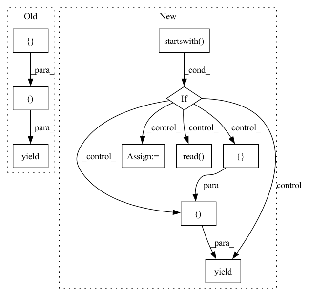

Pattern ID :15894
Before Change
for id_, row in enumerate(f):
data = row.strip().split(" ", 1)
speaker_id = data[0].split("_")[0]
yield id_, {
"speaker_id": speaker_id,
"path": os.path.join(path_to_clips, speaker_id, data[0] + ".wav"),
"audio": os.path.join(path_to_clips, speaker_id, data[0] + ".wav"),
"sentence": data[1],
}
After Change
inside_clips_dir = False
id_ = 0
for path, f in audio_files:
if path.startswith( path_to_clips) :
inside_clips_dir = True
if path in examples:
audio = {"path": path, "bytes": f.read() }
yield id_, {**examples[path], "audio": audio}
id_ += 1
elif inside_clips_dir:
break
In pattern: SUPERPATTERN
Frequency: 3
Non-data size: 10
Instances Fragment ID: 53679243
Project Name: huggingface/datasets
Commit Name: 0534a87f60fb9a589138f0773e057c2429f482b7
Time: 2021-11-19
Author: 42851186+lhoestq@users.noreply.github.com
File Name: datasets/vivos/vivos.py
M Class Name: VivosDataset
N Class Name: VivosDataset
M Method Name: _generate_examples(4)
N Method Name: _generate_examples(3)
M Parent Class: datasets.GeneratorBasedBuilder
N Parent Class: datasets.GeneratorBasedBuilder
M File Name: datasets/vivos/vivos.py
N File Name: datasets/vivos/vivos.py
M Start Line: 116
M End Line: 125
N Start Line: 113
N End Line: 138
Before Change
for label, images in data.items():
for image_name in images:
image = image_dir_path / f"{image_name}.jpg"
features = { "image": str(image), "label": label}
yield image_name, features
After Change
with open(metadata_path, encoding="utf-8") as f:
files_to_keep = set(f.read().split("\n"))
for file_path, file_obj in images:
if file_path.startswith( _IMAGES_DIR) :
if file_path[len(_IMAGES_DIR) : -len(".jpg")] in files_to_keep:
label = file_path.split("/")[2]
yield file_path, {
"image": {"filename": file_path.split("/")[-1], "data": file_obj.read()},
"label": label,
}
Fragment ID: 53679241
Project Name: huggingface/datasets
Commit Name: 0ef629cdda4aaab151a792ff29c879f4fcf7f4f4
Time: 2021-10-18
Author: 42851186+lhoestq@users.noreply.github.com
File Name: datasets/food101/food101.py
M Class Name: Food101
N Class Name: Food101
M Method Name: _generate_examples(3)
N Method Name: _generate_examples(3)
M Parent Class: datasets.GeneratorBasedBuilder
N Parent Class: datasets.GeneratorBasedBuilder
M File Name: datasets/food101/food101.py
N File Name: datasets/food101/food101.py
M Start Line: 186
M End Line: 191
N Start Line: 206
N End Line: 215
Before Change
user_id, filename, sentence = field_values
path = os.path.join(path_to_datas[i], f"{filename}.wav")
counter += 1
yield counter, {"path": path, "audio": path, "sentence": sentence}
else:
for i, path_to_index in enumerate(path_to_indexs):
with open(path_to_index, encoding="utf-8") as f:
lines = f.readlines()After Change
path = f"{path_to_data}/{filename}.wav"
sentences[path] = sentence
for path, f in files:
if path.startswith( path_to_data) :
counter += 1
audio = {"path": path, "bytes": f.read() }
yield counter, {"path": path, "audio": audio, "sentence": sentences[path]}
else:
for i, path_to_index in enumerate(path_to_indexs):
with open(path_to_index, encoding="utf-8") as f:
lines = f.readlines() Fragment ID: 53679244
Project Name: huggingface/datasets
Commit Name: 0534a87f60fb9a589138f0773e057c2429f482b7
Time: 2021-11-19
Author: 42851186+lhoestq@users.noreply.github.com
File Name: datasets/openslr/openslr.py
M Class Name: OpenSlr
N Class Name: OpenSlr
M Method Name: _generate_examples(4)
N Method Name: _generate_examples(3)
M Parent Class: datasets.GeneratorBasedBuilder
N Parent Class: datasets.GeneratorBasedBuilder
M File Name: datasets/openslr/openslr.py
N File Name: datasets/openslr/openslr.py
M Start Line: 625
M End Line: 652
N Start Line: 583
N End Line: 624